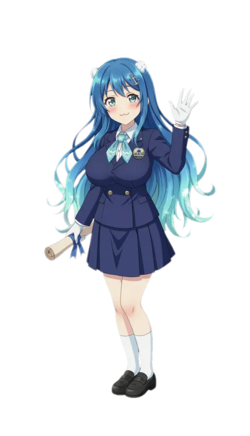

| 효빈광역시 소재 언론사 | |
|---|---|
| 신문 | 효빈일보 · 포성일보 · 덕북일보 · 덕북매일 · 덕북경제 · 북도경제 · 효빈장일신문 |
| 지상파 방송 | KBS효빈 · 효빈MBC · HBS 효빈방송 |
| 종교 방송 | 효빈CBS · BBS 효빈불교방송 · cpbc 효빈가톨릭평화방송 · febc 효빈극동방송 · WBS 효빈원음방송 |
| 기타 방송사 | 효빈FM · 효빈복지방송 · DHB 효빈덕북방송 · HCTV효빈방송 · TBN 효빈교통방송 |
- 1. 개요 및 역사
- 1.1. 중동 3가 시절 (1950~2011)
- 1.2. 중수동 시대 (2011~현재)
- 2. 지배 구조
- 3. 역대 대표이사
- 4. 평가
- 5. 로고 및 사시
- 6. 로고송
- 7. 사옥 및 시설
- 8. 연중 캠페인
- 9. 발행 현황
- 9.1. 발행(배달) 지역
- 10. 제작 프로그램 (주요 지면)
- 10.1. 뉴스 (정치/경제)
- 10.2. 시사 / 교양
- 10.3. 연예 / 오락 (덕질 섹션)
- 10.4. 라디오 (팟캐스트)
- 11. 구성원
- 12. 주변 교통편
- 13. 여담
— 2011년 중수동 신사옥 이전 기념사 중
1. 개요 및 역사
효빈광역시를 상징하는 제1등 지역 정론지. 1950년 창간 이래 효빈의 심장부였던 원도심에서 시민들의 목소리를 대변해왔다. 단순한 뉴스 전달자를 넘어 효빈시의 현대사를 함께 호흡해 온 '역사의 증인'으로 평가받는다.
1.1. 중동 3가 시절 (1950~2011)
효빈일보의 황금기를 상징하는 시기다. 창간 당시부터 효빈의 번화가였던 중구 중동 3가에 터를 잡았다. 1973년 통합 창간을 거치며 효빈권 유일의 '1도 1사' 체제를 굳혔고, 당시 중동 사옥은 "효빈에서 가장 빨리 호외를 받아볼 수 있는 곳"으로 통했다.
특히 윤대환 시장 집권기(2006~2007) 당시, 시장 일가의 두청운수 비리와 전차 폐선 음모를 파헤치는 탐사 보도를 연일 1면에 실었다. 이에 격분한 윤대환 측이 용역 깡패를 동원해 사옥 정문을 버스로 봉쇄하고 윤전기 전원을 차단하는 초유의 사태가 발생했다. 하지만 기자들은 굴하지 않고 촛불을 켠 채 등사기로 '수기 호외'를 찍어내어 중동 골목길을 누비며 시민들에게 진실을 알렸다. 이를 **'중동의 펜촉 사건'**이라 부르며, 효빈 언론사의 가장 빛나는 순간으로 기억되고 있다. 당시 윤대환이 보낸 용역들이 쇠파이프를 휘둘렀지만 기자들의 펜촉이 더 강했다
1.2. 중수동 시대 (2011~현재)
원도심의 노후화와 행정 중심지의 북상에 발맞춰 2011년 현재의 북구 중수동 285 신사옥으로 이전했다. 북구청 바로 옆에 위치해 있어 행정 감시에 최적화된 입지를 자랑한다.
이전과 함께 전면 디지털 인쇄 시스템을 도입하고 온라인 뉴스룸을 대폭 강화했다. 가장 파격적인 변화는 전국 지역 신문 중 최초로 '서브컬처 전담 데스크'를 신설한 것이다. 당시 "정론지가 무슨 만화 타령이냐"는 내부 반발도 있었으나, 강현우 사장이 "효빈은 이제 덕후의 도시다. 독자가 있는 곳에 신문이 있어야 한다"며 밀어붙였고, 결과는 대성공이었다. 현재 효빈일보 주말판 서브컬처 섹션은 전국구 인지도를 자랑한다.
2. 지배 구조
현재 대주주는 효빈의 향토 대기업 회주홀딩스다.
회주그룹 박성인 사장이 이사회 의장을 겸임하고 있는데, 이는 단순한 경영을 넘어 '언론 수호'의 의미가 크다. 윤대환이 버스 회사를 앞세워 효빈일보를 적대적 M&A하려 할 때, 박성인 사장이 사재를 털어 지분을 방어해준 덕분에 지금의 독립적인 편집권이 유지될 수 있었다.
3. 역대 대표이사
- 제1~3대 김용석 (1973~1995): 통합 창간의 주역이자 효빈 언론계의 대부. 평생을 현장에서 뛴 기자 출신 경영인으로, "펜은 칼보다 강하고, 팩트는 펜보다 강하다"는 사훈을 정립했다.
- 제4대 박진호 (1995~2006): 효빈일보의 민주화를 이끈 인물. 그러나 말년에 윤대환 시장의 집요한 언론 탄압과 세무 조사 압박을 견디지 못하고 지병으로 사퇴했다. 퇴임식 때 눈물을 흘리며 "후배들에게 미안하다"고 한 일화가 유명하다.
- 제5대 최기철 (2006~2008): 언론인 조무사. 윤대환이 꽂은 낙하산 인사로, 취임하자마자 비판 기사를 삭제하고 '윤대환 시장님 덕분에 효빈이 빛난다' 같은 용비어천가를 1면에 배치했다. 결국 2008년 효빈일보 총파업 사태와 시민들의 구독 거부 운동으로 쫓겨나듯 사임했다. 효빈일보 역사상 유일하게 사사진(社史)에서 사진이 삭제된 인물.
- 제6~7대 정수영 (2008~2016): 폐허가 된 신문사를 재건한 '어머니 같은 리더'. 해직 기자들을 전원 복직시키고, 2011년 중수동 신사옥 이전을 성공적으로 마무리했다. 현재의 안정적인 재무 구조를 만든 장본인.
- 제8대 강현우 (2016~현재): 현직 사장. 문화부 기자 출신이라는 특이한 이력을 가졌다. 취임 일성으로 "이제는 덕후의 시대다"를 외치며 서브컬처 전담 데스크를 신설한 파격의 아이콘. 꼰대 간부들의 반발을 실적으로 잠재웠으며, 현재 효빈일보를 온오프라인 통합 미디어 그룹으로 변모시키고 있다.
4. 평가
효빈일보는 대한민국 언론사에서 유례를 찾기 힘든 **'이중적 논조(Dual-Tone)'**를 가진 매체로 평가받는다. 이는 정치적 무관심이나 기회주의가 아니라, 효빈광역시라는 도시의 복합적인 정체성(엄격한 행정 감시 + 자유분방한 서브컬처 문화)을 정확히 꿰뚫어 본 전략적 선택이다.
- 정치/행정 (The Watchdog): 1면부터 5면까지의 정치·사회면은 그야말로 '저승사자'다. 시청 공무원들이 아침에 신문을 펼치기 전 심호흡을 한다는 소문이 있을 정도다. 특히 예산 낭비, 전시행정, 8호선 공사 지연 문제 등에 대해서는 여야를 막론하고 서릿발 같은 비판을 쏟아낸다. "시민의 세금은 1원도 허투루 쓰여선 안 된다"는 보수적이고 엄격한 잣대를 들이댄다. 박효빈 시장조차 "효빈일보 사설이 제일 무섭다"고 했을 정도.
- 문화/서브컬처 (The Trendsetter): 반면, 주말판이나 후반부 문화면은 '180도 다른 세상'이다. 서브컬처, 성소수자, 청년 문화, 인디 게임, 버추얼 아이돌 등에 대해 기성 언론 중 가장 진보적이고 개방적인 시각을 보여준다. "취향 존중이 곧 민주주의의 척도"라는 사설이 실릴 만큼 문화적 다양성을 옹호한다. 꼰대 같은 훈계조 기사는 절대 찾아볼 수 없으며, 오히려 기자가 덕후 용어를 섞어가며 신나게 떠드는 느낌이다.
- 시너지 효과: 이러한 부조화(?)가 역설적으로 효빈 시민들의 니즈를 완벽하게 충족시킨다. 시민들은 "행정은 똑바로 감시하되, 내 취미는 존중해 달라"는 복합적인 욕구를 가지고 있는데, 효빈일보가 이를 정확히 긁어주는 것. 덕분에 50대 공무원과 20대 대학생이 같은 신문을 구독하는 기현상이 벌어지고 있다.
5. 로고 및 사시
- 로고: 효빈의 상징색 Deep Navy(#003399)와 Sky Blue를 조합한 세련된 로고. 펜촉과 디지털 픽셀이 조화된 형상이다.
- 사시: 정의를 신념으로, 봉사를 사명으로, 시민을 주인으로.
6. 로고송
신문사 주제에 로고송이 있다! 사옥 앞을 지나거나 HBS 라디오 광고 시간에 들을 수 있다. 멜로디가 꽤 중독성 있어서 수능 금지곡으로 지정될 뻔했다는 소문이 있다.
"아침이 고운 우리의 도시~ 밝은 귀 바른 눈 효빈일보~ (함께해요!)"
7. 사옥 및 시설
북구 중수동 285에 위치한 지상 15층, 지하 3층 규모의 인텔리전트 빌딩.
- 1층 독자 라운지 'The Page':

한바다 거대 동상이 세워져 있으며, 누구나 무료로 커피를 마시며 조간 신문을 읽을 수 있다. 주말에는 서브컬처 동호회 모임 장소로도 대관해준다. - 3층 역사 전시관: 윤대환 집권기 당시 부서진 윤전기 부품과 쇠파이프 자국이 선명하게 남은 취재 수첩, 당시 발행했던 등사기 호외 원본 등이 전시되어 있다. 지역 초중고생들의 민주주의 현장 학습 필수 코스다.
- 15층 스카이 라운지: 직원 식당이자 외부인에게도 개방되는 레스토랑. 중수동 일대가 한눈에 내려다보이는 뷰 맛집이다.
8. 연중 캠페인
- 2024년: "잊지 말자 중동의 투혼, 지켜내자 효빈의 진실."
- 2025년: "덕질이 권리가 되는 도시, 효빈일보가 함께합니다."
이게 신문사 슬로건이라니 - 2026년: "정의를 신념으로, 봉사를 사명으로, 시민을 주인으로"
9. 발행 현황
효빈광역시 내에서 독보적인 유료 부수 1위를 기록하고 있으며, 덕북권 전체에서 가장 신뢰받는 지면으로 통한다.
9.1. 발행(배달) 지역
- 효빈광역시 전역: 새벽 배송 시스템이 완벽하게 갖춰져 있다.
- 효빈권: 선곡군, 약산시, 천주시, 치원군, 기도군 등 광역 전철이 닿는 곳은 당일 조간 배달이 가능하다.
- 기타: 덕빈북도 남부 주요 도시 및 수도권 효빈 향우회 대상 특별판 발행. 온라인 구독자 비중이 매년 20%씩 성장 중이다.
10. 제작 프로그램 (주요 지면)
효빈일보는 종이 신문의 한계를 넘어 다양한 온/오프라인 콘텐츠를 생산한다.
10.1. 뉴스 (정치/경제)
- 중수동 사자후: 1면 하단 고정 칼럼. 논설위원들이 돌아가며 집필하는데, 필력이 가히 무협지 수준으로 매섭다. 특히 윤재훈이나 부패 공무원이 헛짓거리를 하면 "시장의 눈물은 닦아줄 수 있어도, 무능은 덮어줄 수 없다"는 식의 명문장으로 뼈도 못 추리게 팬다. 정치권에서는 "사자후에 이름 올리면 정치 생명 끝난다"는 말이 돌 정도.
- 8호선 워치: 효빈지하철8호선의 조기 개통을 위해 공사 현장을 매일 밀착 취재한다. 공정률이 0.1%라도 밀리면 바로 1면 톱기사로 때려버린다. 시공사들이 가장 무서워하는 지면.
10.2. 시사 / 교양
- 전차와 사람들: 원도심 중동 시절부터 이어진 효빈의 역사를 인문학적으로 풀어내는 장기 연재 코너. 나이 지긋한 어르신들이 스크랩해서 모으는 인기 연재물이다.
- 맛집 탐방, 효빈슐랭: 광고성 기사를 철저히 배제하고 기자가 직접 돈 내고 먹어본 뒤 솔직하게 평가하는 코너. 여기서 별점 1개 받으면 그 식당은 문 닫아야 한다는 소문이 있다.
10.3. 연예 / 오락 (덕질 섹션)
- 위클리 효빈스 (Weekly Hyobins): 매주 금요일 발행되는 16페이지 분량의 별지 섹션. 본격 서브컬처 특화 매거진이다. 단순한 신작 소개를 넘어 "러브라이브가 효빈시 지역 경제에 미치는 낙수 효과 분석"이라든지 "버추얼 유튜버와 Z세대의 새로운 소통 방식" 같은, 논문 수준의 심층적이고 진보적인 담론을 다룬다. 덕후들 사이에서는 '필독서'로 통한다.
- 정치부장이 쓰는 피규어 리뷰: 가장 충격적인 코너. 평소 1면에서 독설을 날리던 엄근진 정치부장이 자신의 취미인 피규어를 리뷰하는 코너다. "이 피규어의 조형미는 마치 균형 잡힌 예산안과 같다"라거나 "도색 미스는 부실 공사와 같다"는 식의 기묘한 비유가 일품이다.
의외로 인기가 많아서 단행본으로도 나왔다. - 애니 속 정치학: "건담의 지구연방과 효빈시의회의 비교", "은하영웅전설로 보는 리더십", "소드 아트 온라인 사건으로 보는 가상현실 법제화의 필요성" 등 애니메이션 세계관을 정치학적, 사회학적으로 진지하게 분석하는 코너. 대학교양 수업 교재로 써도 될 만큼 퀄리티가 높다.
- 성우 인터뷰: HAF 기간이 되면 사가라 마유, 다테 사유리 등 효빈을 찾은 일본 성우들의 단독 인터뷰가 전면 배치된다. 덕후들이 이 신문 사려고 편의점 오픈런을 한다.
10.4. 라디오 (팟캐스트)
- 효빈일보 뉴스톡: 편집국장과 기자들이 나와 그날의 핫이슈를 다루는 팟캐스트. 원래는 시사 방송이었으나, 기자들 중에 숨은 덕후가 많아서 방송하다 말고 "이번 분기 신작 애니 봤냐"며 캐릭터 논쟁을 벌이다가 방송이 산으로 가는 게 킬링 포인트다. 청취율은 오히려 더 올랐다(...)
11. 구성원
- 이사회 의장: 박성인 (회주그룹 사장, 효빈 언론의 든든한 수호자)
- 대표이사 사장: 강현우 (문화부 기자 출신, 덕후 리더십의 표본)
- 편집국장: 위병기 (2007년 사옥 봉쇄 당시 옥상에서 확성기를 들고 투쟁을 이끌었던 전설의 기자. 지금도 후배들에게 "기자는 깡다구다"라고 가르친다.)
12. 주변 교통편
효빈 북부의 행정·언론 중심지 중수동.
| 교통수단 | 노선 (정류장) |
|---|---|
|
● 2호선 (Jade Green / 아오바 모카 매칭) ● 6호선 (Purple / 미나토 유키나 매칭) 중수역 (도보 5분) |
|
| 31, 32, 33 (중수동 순환) | |
| 30번 (Pastel Yellow / 나카스 카스미 매칭) | |
| T3 (중수동 방면 시티투어) |
13. 여담
- 편집국의 두 얼굴 (전쟁과 평화): 편집국 회의 풍경이 가관이다. 한쪽 끝에 있는 정치부 테이블에서는 부장이 "이번 시장 발언, 이거 예산 낭비 징후 아닙니까? 당장 취재해!"라며 핏대를 세우고, 반대편 문화부 테이블에서는 "이번 분기 신작 애니 작화 미쳤다. 이건 특집으로 다뤄야 해!"라며 눈을 반짝인다. 가운데 앉은 편집국장은 "제발 둘 다 톤 조절 좀 해! 독자들 정신 사납다!"며 머리를 싸맨다. 이 기묘한 공존이 효빈일보의 힘이다.
- '덕력(德力)' 시험 채용설: 공식적인 채용 절차는 아니지만, 문화부 기자 면접 때 "본인이 가장 감명 깊게 본 애니메이션과 그 이유를 정치학적/사회학적 관점에서 논하시오"라는 질문이 나온다는 소문이 파다하다. 실제로 문화부 기자의 90%는 '혼모노' 덕후라고 하며, 입사 후 책상에 피규어 하나쯤은 기본으로 올려두는 문화가 있다.
- 편집국 BGM 전쟁: 마감 시간 직전 편집국에는 묘한 긴장감이 흐르는데, 정치부는 '베토벤 교향곡'이나 '제국군 행진곡' 같은 웅장하고 비장한 음악을 틀어놓고 기사를 쓰고, 문화부는 최신 애니메이션 OST나 아이돌 노래를 틀어놓고 리듬을 탄다. 가끔 두 부서의 스피커 볼륨 대결이 벌어지면 사회부장이 나서서 "둘 다 시끄러워! 경찰 부른다!"며 중재한다고.
- 사내 인트라넷 짤방 대전: 사내 게시판 익명 코너에는 매일같이 정치 풍자 짤방과 애니메이션 짤방이 뒤섞여 올라온다. 특히 마감 스트레스를 풀기 위해 기자들이 직접 만든 '효빈일보 짤방'은 퀄리티가 상당해서 가끔 외부 커뮤니티로 유출되기도 한다. "마감 못 맞추면 편집국장이 건담으로 변신해서 쫓아온다"는 짤이 유명하다.
- 만우절 특집 1면: 매년 만우절 1면은 '합법적 약 빤 날'이다. 2024년에는 "[속보] 효빈시, 네오 도쿄로 개명 선포"라는 기사를 내보내 시민들을 빵 터뜨렸다.
- 명예 편집국장 '나비': 사옥 1층 로비에 사는 치즈색 길고양이. 기자들이 기사가 안 써질 때 나비를 쓰다듬으러 내려온다. 나비가 사료를 안 먹으면 그날 신문 오타가 많다는 징크스가 있다.
-
윤대환과의 소송전: 윤대환 전 시장이 건 12건의 소송에서 12전 12승을 거두었다.
변호사 비용은 박성인 회장이 쿨하게 지원했다고 한다. - 구내식당 맛집설: 15층 구내식당 밥이 맛있기로 소문이 자자하다. 특히 매주 금요일 '돈가스 정식'은 북구청 공무원들도 줄 서서 먹는다.
-
윤재훈의 중수동 계란 봉변: 효빈일보가 박효빈 시장의 "압도적인 정책 추진력과 LTE급 행정 처리 속도"를 칭찬하는 사설을 싣자, 이에 열폭한 윤재훈이 사옥 앞에 나타나 "이 좌파 언론 놈들아! 박효빈 따까리 짓 하니까 좋냐? *******!"라며 차마 입에 담지 못할 쌍욕을 퍼부었다. 그러나 하필 그곳은 효빈 행정의 심장부이자 시민 의식이 투철한 중수동이었다. 지나가던 시민들과 인근 식당 상인들이 던진 날계란과 소금 세례를 맞고 꼴사납게 경찰에 연행되었다.
경찰서에서도 "계란 던진 놈들 다 구속해!"라고 악을 썼다고 한다. - 최기철의 최후 (몰락 일대기): 제5대 사장이었던 최기철은 윤대환의 낙하산으로 취임하여 언론 탄압을 주도했다. 2008년 총파업 당시 노조원들에게 "너희는 주는 월급이나 받아먹는 개돼지다"라는 막말을 퍼부은 녹취록이 공개되어 시민들의 공분을 샀다. 결국 시민들의 구독 거부와 광고주들의 손절로 회사 매출이 급감하자 이사회에서 해임되었다. 이후 횡령 혐의로 구속되었을 때 믿었던 윤대환조차 면회 한 번 오지 않았다고 한다. 출소 후에는 효빈시 외곽 고시원을 전전하며 폐지를 줍는 모습이 목격되었다는 도시괴담이 돌고 있다. 효빈일보 사사(社史)에서 유일하게 사진이 삭제되고 이름만 남은 인물이다.